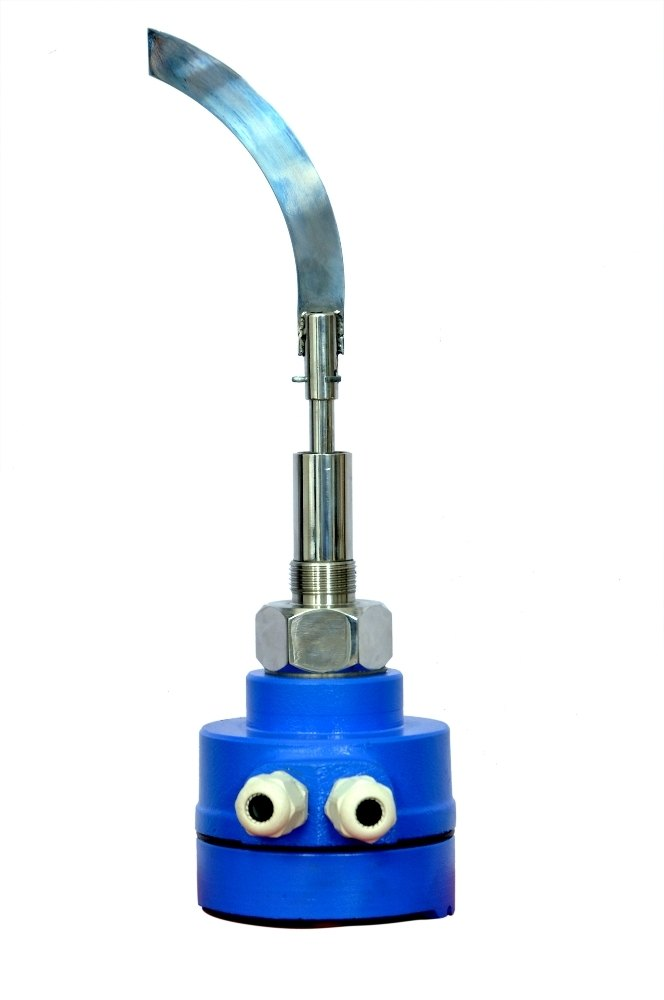
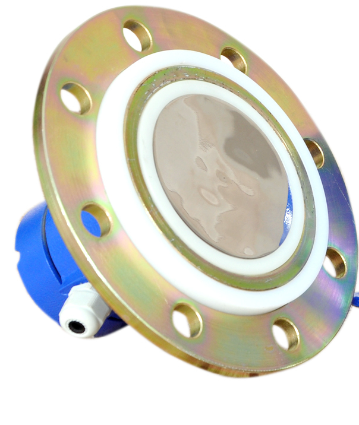

Field Showcase
Industrial Installation Gallery
Explore Levtron level switches and transmitters deployed across chemical plants, food grain silos, and refineries. Click any photo to expand details.





